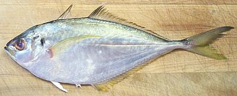

Bumper

[Pacific Bumper, Yellowtail Bumper, Chloroscombrus orqueta |
Atlantic Bumper, Chloroscombrus chrysurus]
This fish is closely related to Scad, but
while there are scads of scad there are only two bumpers - Pacific and
Atlantic, and even those two may prove to be different varieties of the
same species. The photo specimen is a Pacific Bumper. Pacific Bumper can
grow to nearly 12 inches but Atlantic Bumper can grow to 25 inches and
supports a larger fishery. Pacific Bumper are found in the Eastern
Pacific from Los Angeles south to Peru. Atlantic Bumper is found in
the West Atlantic from Massachusetts south to Uruguay.
More on Varieties of Fish (very
large page).
Pacific Bumper has a pleasant flavor and is milder and softer than its
relatives the scads. Unlike scads the "scutes" along its lateral
line are too small to be any trouble.
Cooking: See suggestions under "Skin" below.
Bumper is very easy to fillet:
- Scale the fish.
- Take your kitchen shears and make a cut along the bottom taking off
the keel all the way from the pelvic (bottom) fins to just beyond the
vent. This cut needs to be deep enough that you can open the bottom of
the fish.
- Make the usual cuts around the collar extending them down to behind
the pelvic fins. Cut the backbone from the top with your kitchen
shears, pull the head off and discard.
- Remove any innards that didn't come out with the head and scrape down
to the backbone. Rinse clean.
- Make a cut from the tail to the body cavity on both sides of the
bottom fin.
- Working along the top from front to back follow the bones making a
cut all the way down to the backbone. Next dip over the backbone and
cut down to the previously made cut from the body cavity to the tail.
- Working from the front dip over the backbone and follow the ribs
down and finish by pulling the fillet off the ends of the ribs. Check
for any ribs that may have come with it.
- You'll notice some substantial centerline pin bones. Pull them
out straight forward for about the first third of the fillet.
Skin: Bumper skin is not easy to remove - the fillets
are small and the skin is thin and weak - but it shrinks without mercy
with any cooking method (mostly from top to bottom). Fry fillets skin-on
and it'll curl them up. To enjoy this fish without the hassle of removing
the skin I suggest these cooking methods:
- Pan dress the fish (scale, clean, remove head and tail) and steam. The
skin will shrink into a narrow strip that can be removed when the fish is
done. Pull all fins out and any exposed ribs. Serve with a light sauce.
- Fillet or pan dress. With a razor sharp filleting knife cut a 3/4" cross
hatch pattern through the skin. Powder with rice flour and deep fry (or
pan fry fillets in oil 1/4" deep). If it's been pan dressed pull out all
fins and any exposed ribs. Serve with a light sauce.
Stock: Soup stock made with bumper heads and bones is
pretty bad - I don't recommend it.
sf_bumpz 060812 - www.clovegarden.com
©Andrew Grygus - agryg@clovegarden.com - Photos
on this page not otherwise credited © cg1
- Linking to and non-commercial use of this page permitted